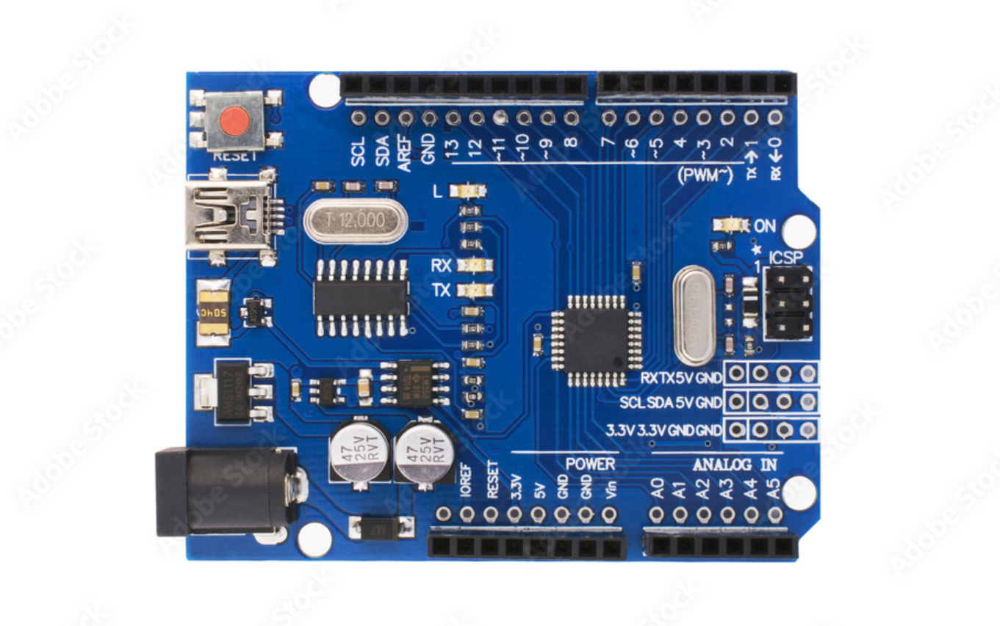
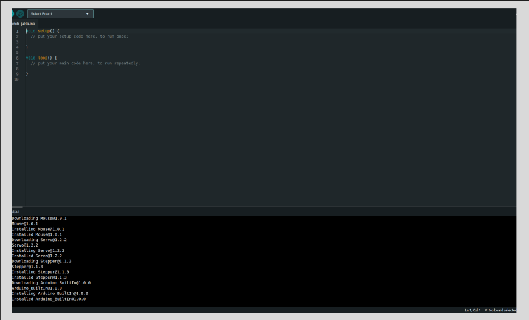

What is Arduino?
Before getting into electronics, we had to do everything manually. For example, if you want to light an LED with a battery, you will make a circuit and turn on the switch when you want to turn on the bulb. But let's assume you want the LED to change its brightness according to the environmental lighting conditions. Then, after every small interval, you will have to increase or decrease the brightness of the LED using a potentiometer, which you will connect to the circuit.
We can see that it is a very hard task to keep changing the brightness of the LED manually. Assume that if we had something that could sense the environmental light conditions and automatically set the brightness of the LED.
Here comes the role of electronics. We can use Arduino, which can take signals from the sensor, and based on the command fed into its microcontroller, it can increase or decrease the brightness of the LED.
Why Use Arduino?
- Easy to learn and use - It is very easy to use and even a beginner can learn and use it in a very less time.
- Cost-effective - It is very affordable than any other microcontroller available.
- Versatile - Can be used for a variety of projects, from simple to complex.
- Community support - Large, active community for help and inspiration.
Setting Up the Arduino Software (IDE)
- Download the Arduino IDE:
- Go to the Arduino IDE Downloads
- Click the download link for your operating system (Windows, Mac, Linux).
- Install the Arduino IDE.
- Connect the Arduino Board:
- Connect the Arduino board to your computer using the USB cable.
- Open the Arduino IDE.
- Go to Tools > Board: Arduino Uno (or select your specific board model).
- Go to Tools > Port and select the port that corresponds to your Arduino.
Programming Arduino
Understanding the Structure of an Arduino Program
An Arduino program (also known as a sketch) is made up of two main parts - the setup and the loop. Let's break down these parts with examples.
The setup Function:
The setup function is where you write code that you want to run once when the Arduino starts up. This is where you set up your pins and initialize variables or libraries.
void setup() {
pinMode(13, OUTPUT); // Set pin 13 as an output
}In this example, pinMode(13, OUTPUT) tells the Arduino that pin 13 will be used as an output. This setup code runs once when the Arduino is powered on or reset.
The loop Function:
The loop function contains the main code that you want to run repeatedly. After the setup() function runs, the loop() function runs over and over again, in a cycle.
void loop() {
digitalWrite(13, HIGH); // Turn the LED on
delay(1000); // Wait for one second
digitalWrite(13, LOW); // Turn the LED off
delay(1000); // Wait for one second
}This code example will make the LED blink. Putting it all together:
void setup() {
pinMode(13, OUTPUT); // Set pin 13 as an output
}
void loop() {
digitalWrite(13, HIGH); // Turn the LED on
delay(1000); // Wait for one second
digitalWrite(13, LOW); // Turn the LED off
delay(1000); // Wait for one second
}Additional Concepts that you must learn:
Comments:
Comments are notes in the code that are ignored by the Arduino compiler. They help explain the code.
// This is a single-line comment
/* This is a
multi-line comment */Variables:
Variables store data that you can use in your program.
int ledPin = 13; // Create a variable to store the LED pin number
void setup() {
pinMode(ledPin, OUTPUT); // Set the LED pin as an output
}
void loop() {
digitalWrite(ledPin, HIGH); // Turn the LED on
delay(1000); // Wait for one second
digitalWrite(ledPin, LOW); // Turn the LED off
delay(1000); // Wait for one second
}Parts of an Arduino Uno
The Arduino Uno is one of the most popular boards in the Arduino family. It has various components that work together to make it a versatile and powerful tool for creating electronic projects. Let's go through each part in detail.
1. Microcontroller (ATmega328P)
Description: The ATmega328P is the brain of the Arduino Uno. It is a microcontroller chip that executes the instructions written in your Arduino sketches.
Features:
- 8-bit AVR RISC-based microcontroller.
- 32KB Flash memory for storing code.
- 2KB SRAM for temporary data storage.
- 1KB EEPROM for permanent data storage.
- 20 MHz maximum clock speed.
Location: The rectangular chip located at the center of the board.
Example Use: Running the code that controls an LED blink pattern.
2. Digital I/O Pins
Description: The Arduino Uno has 14 digital input/output pins (0-13). These pins can be configured as either inputs or outputs in the code.
Features:
- Can read digital signals (HIGH or LOW).
- Can write digital signals (HIGH or LOW).
- Each pin can source/sink up to 40 mA of current.
Location: Along the edge of the board, numbered from 0 to 13.
Example Use: Controlling an LED or reading the state of a button.
3. Analog Input Pins
Description: The Arduino Uno has 6 analog input pins (A0-A5). These pins can read analog signals and convert them to digital values using the built-in Analog-to-Digital Converter (ADC).
Features:
- 10-bit resolution (values from 0 to 1023).
- Can measure voltages from 0V to 5V.
Location: Along the edge of the board, labeled A0 to A5.
Example Use: Reading the value from a potentiometer or a temperature sensor.
4. Power Pins
Description: The power pins are used to power external components connected to the Arduino Uno.
Features:
- VIN: Input voltage to the Arduino when using an external power source (7-12V).
- 5V: Regulated 5V output from the onboard voltage regulator.
- 3.3V: Regulated 3.3V output.
- GND: Ground pins.
Location: Grouped together near the edge of the board.
Example Use: Providing power to sensors and other components.
5. USB Port
Description: The USB port is used to connect the Arduino Uno to a computer for programming and serial communication.
Features:
- Provides power to the board (5V).
- Allows uploading of sketches from the Arduino IDE.
- Supports serial communication for debugging and data exchange.
Location: USB Type B connector at the top of the board.
Example Use: Uploading code and monitoring sensor data via the Serial Monitor.
6. Power Jack
Description: The power jack allows the Arduino Uno to be powered from an external power supply (7-12V).
Features:
- Accepts a standard 2.1mm center-positive plug.
- Connected to the onboard voltage regulator.
Location: Barrel jack connector at the top of the board.
Example Use: Powering the Arduino when not connected to a computer.
7. Reset Button
Description: The reset button restarts the microcontroller, causing the code to start executing from the beginning.
Features:
- Useful for restarting a running sketch.
- Resets the microcontroller without disconnecting power.
Location: Small button near the top-left corner of the board.
Example Use: Restarting the Arduino to reinitialize the sketch.
8. Voltage Regulator
Description: The voltage regulator ensures that the Arduino Uno receives a steady 5V supply, regardless of fluctuations in the input voltage.
Features:
- Regulates input voltages from 7-12V down to 5V.
- Protects the board and components from overvoltage.
Location: Small component near the power jack.
Example Use: Maintaining a stable power supply to the microcontroller and other components.
9. Crystal Oscillator
Description: The crystal oscillator provides a clock signal to the microcontroller, ensuring that it operates at a consistent speed.
Features:
- 16 MHz frequency.
- Ensures precise timing for operations.
Location: Small metallic component near the microcontroller.
Example Use: Keeping the microcontroller running at a steady speed for accurate timing.
10. ICSP Header
Description: The In-Circuit Serial Programming (ICSP) header is used for programming the microcontroller directly, bypassing the USB interface.
Features:
- Provides an alternative method for programming the microcontroller.
- Used for advanced programming and debugging.
Location: 6-pin header near the top-right corner of the board.
Example Use: Reprogramming the bootloader or using advanced debugging tools.
11. TX/RX LEDs
Description: The TX (Transmit) and RX (Receive) LEDs indicate data transmission and reception over the USB serial interface.
Features:
- TX LED blinks when data is being sent from the Arduino.
- RX LED blinks when data is being received by the Arduino.
Location: Near the USB port.
Example Use: Monitoring data exchange during serial communication.
12. Power LED
Description: The power LED indicates that the Arduino board is powered on.
Features:
- Lights up when the board is receiving power.
- Helps in verifying that the board is properly powered.
Location: Near the USB port.
Example Use: Confirming that the Arduino is powered up and ready to use.
13. Additional LEDs
Description: The Arduino Uno has a built-in LED connected to digital pin 13. It can be used for testing and debugging purposes.
Features:
- Controlled via digital pin 13.
- Useful for simple blink tests and status indicators.
Location: Near digital pin 13.
Example Use: Running the basic blink sketch to test the board.